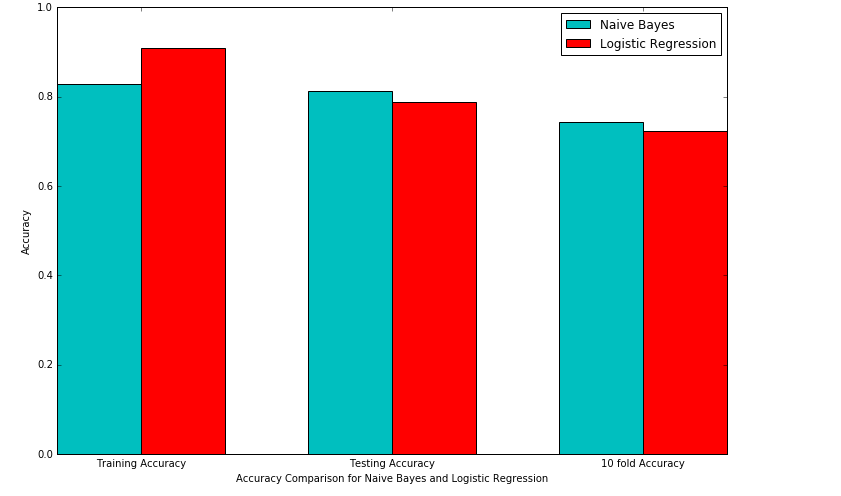
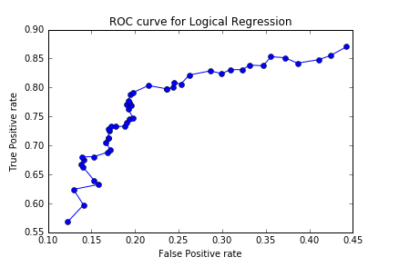

Twitter Sentiment Classification using Apache Spark
Describe your tweet processing steps.
First read the train.csv file and extract the polarity and text of the tweet from the file.
Then lowercase all the words of all the tweets.
Then then clean the tweet text using following steps. Regular expressions are used to clean the text.
Replace words starting with http,https,http(s),or www. by URL
Replace words starting with @ with AT_USER
Replace two or more occurrences of the same character with two occurrences. i.e. ‘exciteddddd’ to ‘excitedd’
Ignore words that don’t start with an alphabet
Apply stemming using Snowball Stemmer
Strip punctuations
Use the stop words list to filter out low value words such as ‘the’, ‘is’ and ‘on’. Stopword list is given in stopword.txt .
Describe your feature space. Did you decide to use unigrams, bigrams, or both? What is the size of your feature space?
To create the feature space I used HashingTF. HashingTF takes an RDD of lists as input and creates a LabeledPoint. For each word of each tweet we create a feature. LabeledPoint consists of label and features. I have used unigrams. I have not restricted the size of my feature space.It is of default size which is 2^20. My feature space contains all the words in all the tweets.
Describe any extra work (i.e. parameter tuning) you did on three classifiers: NB, LOG and Decision Tree(DT). How did it help?
I converted labels and tweets to LabeledPoint and then converted LabeledPoint to RDD as the three classifiers take RDD as input. Then I used
model.clearThreshold() for LogisticRegression to find the prediction probability and by using this probability I could find the tweets which were
classified correctly and the tweets that were classified incorreclty along with their prediction probabilities.
For three classifiers (NB, LOG and DT), report training accuracy, 10-fold cross-validation accuracy, test accuracy, avg precision/recall/f1-score on test, and the confusion matrix on test. Any findings?
For Naive Bayes Training Accuracy= 0.8275 = 82.75%
10-fold cross-validation accuracy=0.742725= 74.2725%
Test accuracy=0.8133704735376045= 81.33%
Summary Stats for NaiveBayes
Precision = 0.852760736196319
Recall = 0.7637362637362637
F1 Score = 0.8057971014492754
Confusion matrix is printed below
153 24
43 139
Area under ROC = 0.8140715216986404
For LogisticRegression Training Accuracy= 0.90925= 90.925%
10-fold cross-validation accuracy=0.7239875= 72.398%
Test accuracy=0.7883008356545961= 78.8300
Summary Stats for Logistic Regression
Precision = 0.8296703296703297
Recall = 0.7704081632653061
F1 Score = 0.798941798941799
Confusion matrix is printed below
132 31
45 151
Area under ROC = 0.7877165207673683
For three classifiers (NB, LOG and DT), plot training accuracy, 10-fold cross-validation accuracy and test accuracy together using matplotlib. You can check out this tutorial. Which classifier overfits the most?
Accuracy comparison for NaiveBayes and LogisticRegression

The classifier with greatest difference in training and test accuracy overfits the most.
for NaiveBayes difference in Training and test accuracy is =0.8275-0.8133= 0.0142
for LogisticRegression difference in Training and test accuracy is =0.90925-0.788300=0.12095
So LogisticRegression classifer overfits the most
Describe the following terms in the context of the assignment: precision, recall, f1-score, confusion matrix (true positive, true negative, false positive, false negative).
First of all we define the following terms
True Positive (TP) - label is positive and prediction is also positive
True Negative (TN) - label is negative and prediction is also negative
False Positive (FP) - label is negative but prediction is positive
False Negative (FN) - label is positive but prediction is negative
Precision: Precision is the fraction of retrieved instances that are relevant. So in context of the assignment precision is the number of tweets whose original label and predicted label are positive divided by the tweets whose predicted label are positive.
precision=TP/(TP+FP)
precision=(Total number of tweets whose original label and predicted label is positive)/Total number of tweets whose predicted label is positive
Recall: Recall is is the fraction of relevant instances that are retrieved. Recall is number of tweets whose original label and predicted label are positive divided by the total number of tweets whose original label are positive.
precision=TP/(TP+FN)
precision=(Total number of tweets whose original label and predicted label is positive)/Total number of tweets whose original label is positive
F1 Score:The F1 score can be interpreted as a weighted average of the precision and recall.The traditional F-measure or balanced F-score (F1 score) is the harmonic mean of precision and recall.The F1 score can be interpreted as a weighted average of the precision and recall, where an F1 score reaches its best value at 1 and worst at 0.
F1 Score=2*(Precision*Recall)/(Precision+Recall)
Confusion Matrix: A confusion matrix is a table that is often used to describe the performance of a classification model (or "classifier") on a set of test data for which the true values are known. It is represented by given matrix.
TN FP
FN TP
Here rows denote Actual values and column denote prediction values.
For NB and LOG, plot the ROC curve and report the area under the curve. What do you learn from the ROC curve?

Area under the curve for NaiveBayes= 0.8140715216986404
Area under the curve for LogisticRegression=0.7877165207673683
ROC Curve: This is a commonly used graph that summarizes the performance of a classifier over all possible thresholds. It is generated by plotting the True Positive Rate (y-axis) against the False Positive Rate (x-axis) as you vary the threshold for assigning observations to a given class.
We get to know the performance of a classifer over all possible thresholds from ROC Curve
Report top 20 most informative features for all three classifiers. Any findings?
I used HashingTF and in HashingTF it is not possible to reverse hashing back to the feature .
Which classifier performs the best? Why?
NaiveBayes classifer performs the best. In my program it shows test accuracy of 81.33%. It performs best because When the training data size is less relative to the features, the information/data on prior probabilities help in improving the results, which is true in my case, and also in NaiveBayes features are independent of each other which increases performance.
Using the best classifer, print some test tweets that are classified correctly or incorreclty along with their prediction probabilities. Among correctly classified tweets, print 5 tweets with highest predicted probailities. Repeat this for incorrectly classified tweets.
Some tweets that were classified correctly along with their prediction probabilities are
(0.9999939438476336, "@switchfoot http://twitpic.com/2y1zl - Awww, that's a bummer. You shoulda got David Carr of Third Day to do it. ;D")
(0.9995619952238444, "@alydesigns i was out most of the day so didn't get much done ")
(0.9764762777988473, "really don't feel like getting up today... but got to study to for tomorrows practical exam... ")
(0.7974355272453987, "@BatManYNG I miss my ps3, it's out of commission Wutcha playing? Have you copped 'Blood On The Sand'?")
(0.9975146449125533, 'sleep soon... i just hate saying bye and see you tomorrow for the night. ')
Some tweets that were classified incorrectly along with their prediction probabilities are
(0.051536823536216865, 'sadly is going to bed. ')
(0.6984757171907514, "@griffmiester no exchanging for me, my laptop hasn't arrived ")
(0.22495272423420345, '@SupaMagg that happened to me saturday night. along with my glittery green lighter! ')
(0.00840059763518824, '@ddlovato @David_Henrie ummmmm i cant find it. ')
(0.7487423280431363, "I'm ready for the weekend already. It's only Monday. ")
5 correct tweets with highest predicted probability are
@kristenkreuk fiuhh, nice to get info from you, i'm one of your fans from indonesia. and still waiting for your movie in my country thanx
@switchfoot http://twitpic.com/2y1zl - Awww, that's a bummer. You shoulda got David Carr of Third Day to do it. ;D
I heard he stopped singing. It's a shame� ? http://blip.fm/~3xath
i could not update at all yesterday
The one day I have to go to school is the same day something exciting happens at parliament square
5 incorrect tweets with highest predicted probability are
has a very sore hand
I need SIMS 3. Gaah!
thinks that Nigella does a shit tea add
Argh...throttled to 64k up and down...I know dialup was slower than this, but man the net is painful at this speed
Feeling soree, bad idea to go running when your sick